{% include JB/setup %}
{% raw %}
<div>

<div class="calibre5"></div><h2 class="chapter" id="ch04">Chapter 4. <a id="ch04__title" class="calibre6"></a>Utilizing object orientation
      </h2>
      <p class="calibre2"> </p><table cellspacing="5" width="100%" border="1" class="calibre10"><colgroup class="calibre19"><col width="550" class="calibre12"/></colgroup><tbody class="calibre13"><tr class="calibre14"><td class="calibre20"/>
            </tr></tbody></table><div class="calibre4">
         
         <b id="ch04sb01" class="calibre21">In this chapter</b>
         
         <p class="calibre22"></p>
         <ul class="calibre23"><li class="calibre24">Object initialization</li>
            
            <li class="calibre24">Abstract methods</li>
            
            <li class="calibre24">Composition and Inheritance</li>
            
            <li class="calibre24">Abstract interfaces</li>
            
            <li class="calibre24">Type inference and public APIs</li>
            
         </ul></div>
      <table cellspacing="5" width="100%" border="1" class="calibre10"><colgroup class="calibre19"><col width="550" class="calibre12"/></colgroup><tbody class="calibre13"><tr class="calibre14"><td class="calibre20"/>
            </tr></tbody></table><p class="calibre2"> </p><p class="noind">Scala is a rich object-oriented language. In Scala, every value is an object. Even operators are method calls against the
         class of an object. Scala offers mixin inheritance through the use of traits. Objects are core to everything in Scala, and
         understanding the details of how they work is important for using Scala.
      </p>
      
      <p class="noind">Object, class, and traits are used to define public APIs for libraries. The initialization, comparison, and composition of
         objects are the bread and butter of Scala development. Initialization is important because of mixin inheritance and the way
         objects get instantiated in various locations. Comparing two objects for equality is critical and can be made trickier when
         inheritance gets in the mix. Finally, composition of functionality is how code reuse is accomplished, and Scala provides a
         few new ways to compose objects.
      </p>
      
      
      
      <h3 id="ch04lev1sec1" class="calibre17"><a id="ch04lev1sec1__title" class="calibre6"></a>4.1. Limit code inside an object or trait’s body to initialization logic
      </h3>
      
      <p class="noind"><a id="iddle1086" class="calibre25"></a><a id="iddle1263" class="calibre25"></a><a id="iddle1264" class="calibre25"></a><a id="iddle1265" class="calibre25"></a><a id="iddle1713" class="calibre25"></a><a id="iddle1716" class="calibre25"></a><a id="iddle1717" class="calibre25"></a><a id="iddle2008" class="calibre25"></a>In Scala, the code inside an <kbd class="calibre18">object</kbd>, <kbd class="calibre18">trait</kbd> or <kbd class="calibre18">class</kbd>’s body is the constructor.
      </p>
      
      <p class="noind">A common starting point for most developers learning Scala is the standard “Hello, World” program. You’ll see many examples
         on the internet with the following code:
      </p>
      
      
      
      <h5 class="notetitle" id="ch04list1">Listing 4.1. <a id="ch04list1__title" class="calibre25"></a>Poor Hello World! example in Scala
      </h5>
      <pre id="PLd0e6889" class="calibre8">object Test extends Application {
  println("Hello, World!")
}</pre>
      
      <p class="noind">Although elegant, this code sample is misleading in its simplicity. The <kbd class="calibre18">Application</kbd> trait uses a nifty trick to simplify creating a new application but comes with a price. Let’s look at a simplified version
         of the <kbd class="calibre18">Application</kbd> trait in the following listing.
      </p>
      
      
      
      <h5 class="notetitle" id="ch04list2">Listing 4.2. <a id="ch04list2__title" class="calibre25"></a>Application trait
      </h5>
      <pre id="PLd0e6907" class="calibre8">trait Application {
  def main(args: Array[String]): Unit = {}
}</pre>
      
      <p class="noind">That’s it. That one empty method is all that’s needed for the <kbd class="calibre18">Application</kbd> trait. Why does this work? Let’s dig into the bytecode.
      </p>
      
      <p class="noind">When compiling traits, Scala creates an interface/implementation pair of classes. The interface is for JVM interoperability
         and the implementation is a set of static methods that can be used by classes implementing the trait. When compiling the <kbd class="calibre18">Test</kbd> object, a main method is created that forwards to the <kbd class="calibre18">Application</kbd> implementation class. Although this method is empty, the logic inside the <kbd class="calibre18">Test</kbd> object is placed in the <kbd class="calibre18">Test</kbd> object’s constructor. Next, Scala creates “static forwarders” for the object. One of these static forwarder methods will
         be the main method, in the signature the JVM expects. The static forwarder will call the method on the singleton instance
         of the <kbd class="calibre18">Test</kbd> object. This instance is constructed in a static initialization block. And finally, we get to the issue. Code inside a static
         initialization block isn’t eligible for <kbd class="calibre18">HotSpot</kbd> optimization. In fact, in older versions of the JVM, methods called from a static initialization block wouldn’t be optimized
         either. In the most recent benchmarks, this has been corrected, such that only the static block itself isn’t optimized.
      </p>
      
      <p class="noind">Scala 2.9 provides a better solution: the <kbd class="calibre18">DelayedInit</kbd> trait.
      </p>
      
      
      <h4 id="ch04lev2sec1" class="calibre28">4.1.1. <a id="ch04lev2sec1__title" class="calibre25"></a>Delayed construction
      </h4>
      
      <p class="noind">Scala 2.9 provides a new mechanism for dealing with constructors. <kbd class="calibre18">DelayedInit</kbd> is a marker trait for the compiler. When implementing a class that extends <kbd class="calibre18">DelayedInit</kbd>, the entire constructor is wrapped into a function and passed to the <kbd class="calibre18">delayedInit</kbd> method. Let’s a look at the <kbd class="calibre18">DelayedInit</kbd> trait.
      </p>
      
      <pre id="PLd0e6966" class="calibre8">trait DelayedInit {
  def delayedInit(x: =&gt; Unit): Unit
}</pre>
      
      <p class="noind"><a id="iddle1672" class="calibre25"></a><a id="iddle1719" class="calibre25"></a>The trait has one method, <kbd class="calibre18">delayedInit</kbd>. As stated before, this method has a function object passed to it. This function contains all the regular constructor logic,
         which provides a clean solution to the <kbd class="calibre18">Application</kbd> trait. Let’s implement your own to demonstrate the <kbd class="calibre18">DelayedInit</kbd> behavior.
      </p>
      
      <pre id="PLd0e6998" class="calibre8">trait App extends DelayedInit {
  var x: Option[Function0[Unit]] = None
  override def delayedInit(cons: =&gt; Unit) {
    x = Some(() =&gt; cons)
  }
  def main(args: Array[String]): Unit =
    x.foreach(_())
}</pre>
      
      <p class="noind">The new <kbd class="calibre18">App</kbd> trait extends <kbd class="calibre18">DelayedInit</kbd>. It defines an <kbd class="calibre18">Option x</kbd> containing the constructor behavior. The <kbd class="calibre18">delayedInit</kbd> method is overridden to store the constructor logic in the <kbd class="calibre18">x</kbd> variable. The <kbd class="calibre18">main</kbd> method is defined so that it will execute the constructor logic stored in the <kbd class="calibre18">x</kbd> variable. Now that the trait is created, let’s try it in the REPL.
      </p>
      
      <pre id="PLd0e7028" class="calibre8">scala&gt; val x = new App { println("Now I'm initialized") }
x: java.lang.Object with App = $anon$1@2013b9fb

scala&gt; x.main(Array())
Now I'm initialized</pre>
      
      <p class="noind">The first line creates a new anonymous subclass of the <kbd class="calibre18">App</kbd> trait. This subclass prints the string <kbd class="calibre18">"Now I'm initialized"</kbd> in its constructor. The string isn’t printed to the console during construction. The next line calls the main method on the
         <kbd class="calibre18">App</kbd> trait. This calls the delayed constructor, and the string <kbd class="calibre18">"Now I'm initialized"</kbd> is printed.
      </p>
      
      <p class="noind">The <kbd class="calibre18">DelayedInit</kbd> trait can be dangerous because it delays the construction of the object until a later time; methods that expect a fully initialized
         object may fail subtly at runtime. The <kbd class="calibre18">DelayedInit</kbd> trait is ideal for situations where object construction and initialization are delayed. For example, in the Spring bean container,
         objects are constructed and then properties are injected before the object is considered complete. The <kbd class="calibre18">DelayedInit</kbd> trait could be used to delay the full construction of an object until after all properties have been injected. A similar
         mechanism could be used for objects created in Android.
      </p>
      
      <p class="noind">The <kbd class="calibre18">DelayedInit</kbd> trait solves the problem where construction and initialization of objects are required, due to external constraints, to happen
         at different times. This separation isn’t recommended in practice but sometimes is necessary. Another initialization problem
         exists in Scala, and this occurs with multiple inheritance.
      </p>
      
      
      
      <h4 id="ch04lev2sec2" class="calibre28">4.1.2. <a id="ch04lev2sec2__title" class="calibre25"></a>And then there’s multiple inheritance
      </h4>
      
      <p class="noind">Scala traits provide the means to declare abstract values and define concrete values that rely on the abstract. For example,
         let’s create a trait that stores property values from a config file.
      </p>
      
      <pre id="PLd0e7076" class="calibre8">trait Property {
  val name: String
  override val toString = "Property(" + name + ")"
}</pre>
      
      <p class="noind"><a id="iddle1282" class="calibre25"></a><a id="iddle1796" class="calibre25"></a><a id="iddle2034" class="calibre25"></a><a id="iddle2040" class="calibre25"></a>The <kbd class="calibre18">Property</kbd> trait defines an abstract member <kbd class="calibre18">name</kbd> which stores the current name of the <kbd class="calibre18">Property</kbd>. The <kbd class="calibre18">toString</kbd> method is overridden to create a string using the <kbd class="calibre18">name</kbd> member. Let’s instantiate an instance of this trait.
      </p>
      
      <pre id="PLd0e7122" class="calibre8">scala&gt; val x = new Property { override val name = "HI" }
x: java.lang.Object with Property = Property(null)</pre>
      
      <p class="calibre2"> </p><table cellspacing="5" width="100%" border="1" class="calibre10"><colgroup class="calibre19"><col width="550" class="calibre12"/></colgroup><tbody class="calibre13"><tr class="calibre14"><td class="calibre20"/>
            </tr></tbody></table><div class="calibre4">
         
         <b id="ch04sb02" class="calibre21">Rule 9: Avoid abstract val in traits</b>
         
         <p class="noind">Using abstract values in traits requires special care with object initialization. While early initializer blocks can solve
            this, <kbd class="calibre18">lazy val</kbd> can be a simpler solution. Even better is to avoid these dependencies by using constructor parameters and abstract classes.
         </p>
         
      </div>
      <table cellspacing="5" width="100%" border="1" class="calibre10"><colgroup class="calibre19"><col width="550" class="calibre12"/></colgroup><tbody class="calibre13"><tr class="calibre14"><td class="calibre20"/>
            </tr></tbody></table><p class="calibre2"> </p><p class="noind">The val <kbd class="calibre18">x</kbd> is defined as an anonymous subclass of the <kbd class="calibre18">Property</kbd> trait. The name is overridden to be the string <kbd class="calibre18">"HI"</kbd>. But when the REPL prints the value of <kbd class="calibre18">toString</kbd>, it shows the value <kbd class="calibre18">null</kbd> for name. This is due to order of initialization. The base trait, <kbd class="calibre18">Property</kbd>, is initialized first during construction. When the <kbd class="calibre18">toString</kbd> method looks for the value of <kbd class="calibre18">name</kbd>, it hasn’t been initialized yet, so it finds the value <kbd class="calibre18">null</kbd>. After this, the anonymous subclass is constructed and the <kbd class="calibre18">name</kbd> property is initialized.
      </p>
      
      <p class="noind">Two ways to solve the problem exist. The first is to define the <kbd class="calibre18">toString</kbd> method as lazy. Although this delays when the <kbd class="calibre18">toString</kbd> method will look for the value of the <kbd class="calibre18">name</kbd> property, it doesn’t guarantee that the initialization order is correct. The better solution is to use early member definitions.
      </p>
      
      <p class="noind">Scala 2.8.0 reworked the initialization order of traits. Part of this was the creation of early member definitions. This is
         done by creating what looks like an anonymous class definition before mixing in a trait. Here’s an example:
      </p>
      
      <pre id="PLd0e7188" class="calibre8">scala&gt; class X extends { val name = "HI" } with Property
defined class X

scala&gt; new X
res2: X = Property(HI)</pre>
      
      <p class="noind">The class <kbd class="calibre18">X</kbd> is defined such that it extends the <kbd class="calibre18">Property</kbd> trait. But before the <kbd class="calibre18">Property</kbd> trait is an anonymous block containing the early member definition. This is a block containing a definition of the <kbd class="calibre18">val name</kbd>. When constructing the class <kbd class="calibre18">X</kbd>, the <kbd class="calibre18">toString</kbd> method correctly displays the name <kbd class="calibre18">HI</kbd>. A second way to declare early initializers exists.
      </p>
      
      <pre id="PLd0e7218" class="calibre8">scala&gt; new { val name = "HI2" } with Property
res3: java.lang.Object with Property{
  val name: java.lang.String("HI2")} = Property(HI2)</pre>
      
      <p class="noind">The next line constructs a new anonymous <kbd class="calibre18">Property</kbd>. The anonymous block after the <kbd class="calibre18">new</kbd> keyword is the early member definition. This defines the members that should be initialized before the <kbd class="calibre18">Property</kbd> trait’s constructor is initialized. The REPL prints the correct <kbd class="calibre18">toString</kbd> from the <kbd class="calibre18">Property</kbd> value.
      </p>
      
      <p class="noind">Early member definitions solve issues that occur when a trait defines an abstract value and relies on it in other concrete
         values. We usually avoid this situation due to <a id="iddle1285" class="calibre25"></a><a id="iddle1434" class="calibre25"></a><a id="iddle1935" class="calibre25"></a>issues from previous versions of Scala. For any complicated trait hierarchies, early member initializations provide a more
         elegant solution to the problem. Because the members that need early initialization can be buried behind several layers of
         inheritance, it’s important to document these throughout a type hierarchy.
      </p>
      
      <p class="noind">Scala makes multiple inheritance simpler and provides mechanisms for dealing with the complicated situation. Early member
         definitions are one such way. Some things can be done to help prevent issues in the future such as providing empty implementations
         for abstract methods.
      </p>
      
      
      
      
      <h3 id="ch04lev1sec2" class="calibre17"><a id="ch04lev1sec2__title" class="calibre6"></a>4.2. Provide empty implementations for abstract methods on traits
      </h3>
      
      <p class="noind">One of the first things I tried to do when first toying with the Scala language was use traits for a kind of “mixin inheritance.”
         The problem I was trying to solve involved modeling a real-world situation. I needed to be able to create managed objects,
         including physical servers, network switches, and so on. The system needed to emulate the real world and create realistic-looking
         data that would be fed through our application’s processing stream. We used this simulation shown in the following <a href="#ch04fig01" class="calibre7">figure 4.1</a> to test “maximum throughput” of the software.
      </p>
      
      
      
      <h5 class="notetitle" id="ch04fig01">Figure 4.1. <a id="ch04fig01__title" class="calibre25"></a>Simulation class hierarchy
      </h5>
      
      <p class="center1">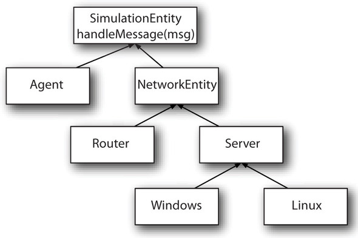</p>
      
      
      <p class="noind">We want this system to model real-world entities as best as possible. We also want the ability to mix in different behaviors
         to our entities, where certain base traits could provide default behavior. Starting out, we want to model network switches
         and network servers, including Windows and Linux servers, along with some form of agent that runs on these services and provides
         additional functionality. Let’s create a simple base class for a <kbd class="calibre18">SimulationEntity</kbd>.
      </p>
      
      
      
      <h5 class="notetitle" id="ch04list3">Listing 4.3. <a id="ch04list3__title" class="calibre25"></a><kbd class="calibre18">SimulationEntity</kbd> class
      </h5>
      <pre id="PLd0e7301" class="calibre8">trait SimulationEntity {
  def handleMessage(msg: SimulationMessage,
                   ctx: SimulationContext): Unit
}</pre>
      
      <p class="noind">This is a simple trait that contains a <kbd class="calibre18">handleMessage</kbd> method. This method takes in a message and a context and performs some behavior. The design of the simulation is such that
         each entity will communicate through a simulation context via messages. <a id="iddle1689" class="calibre25"></a><a id="iddle1917" class="calibre25"></a><a id="iddle1981" class="calibre25"></a>When an entity receives a message, it updates its current state and sends messages appropriate to that state. The context
         can also be used to schedule behavior for later in the simulation. We’re off to a great start. Let’s define a simple <kbd class="calibre18">NetworkEntity</kbd> trait with simple <kbd class="calibre18">NetworkEntity</kbd> behavior. Remember that in a chain-of-command pattern, we want to define a base set of functionality and defer the rest to
         a parent class.
      </p>
      
      
      
      <h5 class="notetitle" id="ch04list4">Listing 4.4. <a id="ch04list4__title" class="calibre25"></a><kbd class="calibre18">NetworkEntity</kbd> trait
      </h5>
      
      <p class="center1">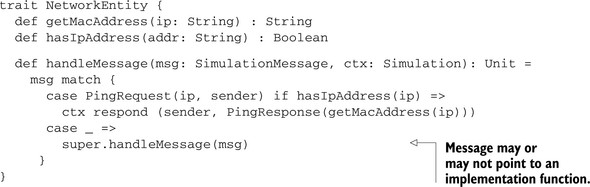</p>
      
      
      <p class="noind">Scala traits have a handy property of not defining their super class until after they have been mixed in and initialized.
         This means that an implementer of a trait doesn’t necessarily know which type <kbd class="calibre18">super</kbd> will be until a process called linearization occurs.
      </p>
      <p class="calibre2"> </p><table cellspacing="5" width="100%" border="1" class="calibre10"><colgroup class="calibre19"><col width="550" class="calibre12"/></colgroup><tbody class="calibre13"><tr class="calibre14"><td class="calibre20"/>
            </tr></tbody></table><div class="calibre4">
         
         <b id="ch04sb03" class="calibre21">Class linearization</b>
         
         <p class="noind">Linearization is the process of specifying a linear ordering to the superclasses of a given class. In Scala, this ordering
            changes for each subclass and is reconstructed for classes in the hierarchy. This means that two subclasses of some common
            parent could have different linearizations and therefore different behaviors.
         </p>
         
      </div>
      <table cellspacing="5" width="100%" border="1" class="calibre10"><colgroup class="calibre19"><col width="550" class="calibre12"/></colgroup><tbody class="calibre13"><tr class="calibre14"><td class="calibre20"/>
            </tr></tbody></table><p class="calibre2"> </p><p class="noind">Because of linearization, the <kbd class="calibre18">NetworkEntity</kbd> trait could be using <kbd class="calibre18">super</kbd> correctly, or it might not, as the compilation output implies:
      </p>
      
      <pre id="PLd0e7373" class="calibre8">simulation.scala:21: error: method handleMessage in trait
SimulationEntity is accessed from super.
It may not be abstract unless it's
overridden by a member declared `abstract' and `override'
    case _ =&gt; super.handleMessage(msg, ctx)
                   ^
one error found</pre>
      
      <p class="noind">To make this work properly, the Scala compiler must know that no matter what, we can safely call <kbd class="calibre18">super.handleMessage</kbd>. This means we have to do one of two things: define a self-type or make the abstract method have a default “do nothing” implementation
         that would get called. The self-type approach could work, but it limits how your trait could be mixed in. We would be defining
         an alternative “base” that the trait had to be mixed into. This base would then need to have some kind of implementation for
         <kbd class="calibre18">handleMessage</kbd>. This provides too much restriction for the aims of the application.
      </p>
      
      <p class="noind"><a id="iddle1571" class="calibre25"></a><a id="iddle1598" class="calibre25"></a><a id="iddle1936" class="calibre25"></a><a id="iddle2009" class="calibre25"></a>The right way to approach this is to implement the method in the <kbd class="calibre18">Simulation-Entity</kbd> trait. This gives all our mixed-in traits the ability to delegate to <kbd class="calibre18">super</kbd>, which is a common theme when using traits as mixins. You must select some point in an object hierarchy where traits may
         start being mixed in. In our simulation, we desire to start directly at the top with <kbd class="calibre18">SimulationEntity</kbd>. But if you’re attempting to use traits with a Java hierarchy, this might not be the case. You may desire to start mixing
         into some lower-level abstraction. In the case of Java Swing, you could start your trait mixin classes with a <kbd class="calibre18">javax.swing.JComponent</kbd> rather than something lower, like a <kbd class="calibre18">java.awt.Component</kbd>. The point is that you need to select the right location to ensure that your mixin-delegate behavior will work correctly.
      </p>
      
      <p class="noind">Sometimes with real-life libraries you can’t find default behaviors to delegate into. In this case, you might think that you
         could provide your own “empty implementation” trait. Let’s see if we can do that on your network simulation example. Let’s
         define your classes like so:
      </p>
      
      <h5 class="notetitle" id="ch04list5">Listing 4.5. <a id="ch04list5__title" class="calibre25"></a>Empty implementation trait attempt
      </h5>
      <p class="center1">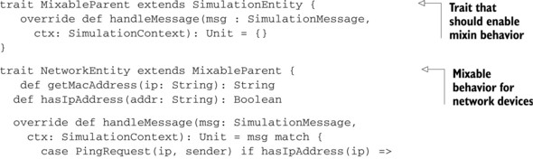</p>
      <p class="center1">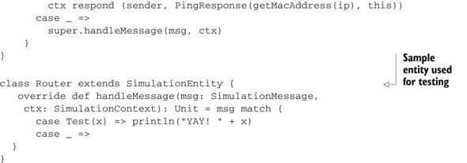</p>
      
      <p class="noind">This code looks like a perfectly reasonable class hierarchy and compiles correctly, but it doesn’t work in practice. The reason
         is that the linearization of a concrete entity (<kbd class="calibre18">Router</kbd> in this case) doesn’t work with the <kbd class="calibre18">MixableParent</kbd> trait; things aren’t ordered as we’d like. The issue arises when we try to create a <kbd class="calibre18">Router with NetworkEntity</kbd> class. This class compiles fine but fails to handle the <kbd class="calibre18">Test</kbd> message at runtime, because this is how the linearization works. The following <a href="#ch04fig02" class="calibre7">figure 4.2</a> shows the class hierarchy for a <kbd class="calibre18">Router with NetworkEntity</kbd> class and numbering classes/traits in their linearization <a id="iddle1662" class="calibre25"></a><a id="iddle1690" class="calibre25"></a><a id="iddle1839" class="calibre25"></a>order. This order determines what <kbd class="calibre18">super</kbd> means for each trait in the hierarchy.
      </p>
      
      
      
      <h5 class="notetitle" id="ch04fig02">Figure 4.2. <a id="ch04fig02__title" class="calibre25"></a>Linearization of Router with NetworkEntity
      </h5>
      
      <p class="center1">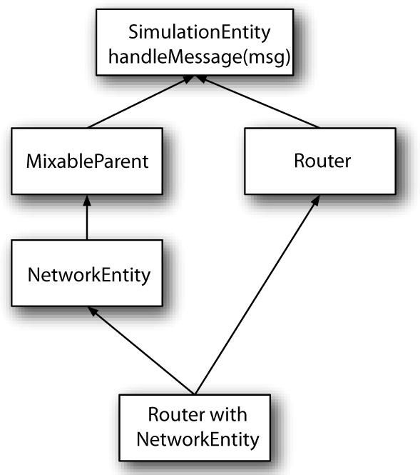</p>
      
      
      <p class="noind">As you can see, the <kbd class="calibre18">MixableParent</kbd> class is being called directly after <kbd class="calibre18">NetworkEntity</kbd> but before <kbd class="calibre18">Router</kbd>. This means that the behavior in <kbd class="calibre18">NetworkEntity</kbd> is never called because the <kbd class="calibre18">MixableParent</kbd> doesn’t call its <kbd class="calibre18">super</kbd>! Therefore, we have to find a way of getting <kbd class="calibre18">MixableParent</kbd> earlier in the linearization. Because things linearize right to left in Scala, we want to try creating a <kbd class="calibre18">MixableParent with Router with NetworkEntity</kbd>. That first requires turning the <kbd class="calibre18">Router</kbd> class into a trait. This might not be feasible in real life, but let’s continue the exercise. We’ll see what this looks like
         in a Scala REPL session:
      </p>
      <p class="calibre2"> </p><table cellspacing="5" width="100%" border="1" class="calibre10"><colgroup class="calibre19"><col width="550" class="calibre12"/></colgroup><tbody class="calibre13"><tr class="calibre14"><td class="calibre20"/>
            </tr></tbody></table><div class="calibre4">
         
         <b id="ch04sb04" class="calibre21">Rule 10: Provide empty implementations for abstract methods on composable traits</b>
         
         <p class="noind">In Scala, trait linearization means that <kbd class="calibre18">super</kbd> calls within a trait may be different depending on how an object is linearized. To provide full flexibility, each composable
            trait should be able to call a <kbd class="calibre18">super</kbd> method, even in that <kbd class="calibre18">super</kbd> method doesn’t do anything.
         </p>
         
      </div>
      <table cellspacing="5" width="100%" border="1" class="calibre10"><colgroup class="calibre19"><col width="550" class="calibre12"/></colgroup><tbody class="calibre13"><tr class="calibre14"><td class="calibre20"/>
            </tr></tbody></table><p class="calibre2"> </p><h5 class="notetitle" id="ch04list6">Listing 4.6. <a id="ch04list6__title" class="calibre25"></a>REPL session with simulation classes
      </h5>
      <p class="center1">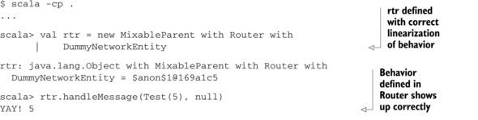</p>
      <p class="center1">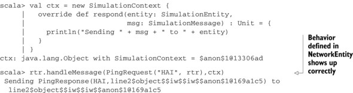</p>
      
      <p class="noind">As you can see, the behavior is now correct, but it isn’t quite intuitive that you have to use the <kbd class="calibre18">MixableParent</kbd> first in every entity creation. Also, the <kbd class="calibre18">Router</kbd> trait suffers from the same issues as <kbd class="calibre18">MixableParent</kbd>. It doesn’t delegate to its parent class! This is okay because <kbd class="calibre18">Router</kbd> is an entity that other behavior is mixed into, but in some cases <a id="iddle1209" class="calibre25"></a><a id="iddle1210" class="calibre25"></a><a id="iddle1286" class="calibre25"></a><a id="iddle1523" class="calibre25"></a><a id="iddle1712" class="calibre25"></a>this would be unacceptable. Also, there are cases where you can’t convert your classes into traits.
      </p>
      
      <p class="noind">When creating a hierarchy of mixable behaviors via trait, you need to ensure the following:</p>
      
      <p class="calibre22"></p>
      <ul class="calibre23"><li class="calibre24">You have a mixin point that traits can assume as a parent.</li>
         
         <li class="calibre24">Your mixable traits delegate to their parent in meaningful ways</li>
         
         <li class="calibre24">You provide default implementations for chain-of-command style methods at your mixin point.</li>
         
      </ul><h3 id="ch04lev1sec3" class="calibre17"><a id="ch04lev1sec3__title" class="calibre6"></a>4.3. Composition can include inheritance
      </h3>
      
      <p class="noind">An aphorism among the Java community is “favor composition over inheritance.” This simple advice means that it’s usually best
         in object-oriented Java to create new classes that “contain” other classes, rather than inherit from them. This allows the
         new class to use features/functionality of several other classes, whereas inheritance is limited to one class. This advice
         also has other benefits, including creating more self-contained “do one thing well” classes. Interestingly, Scala blurs this
         aphorism with its addition of traits.
      </p>
      
      <p class="noind">Scala traits are composable in flexible ways. You can decide the ordering of polymorphic behavior by adjusting the order trait
         inheritance is declared. Multiple traits can also be inherited. These features combine to make traits a viable mechanism of
         composing functionality. Trait composability isn’t all roses; there are still some issues that aren’t addressed. Let’s look
         at the issues associated with composing behavior via inheritance in Java in <a href="#ch04table01" class="calibre7">table 4.1</a>. Let’s look at the complaints associated with composing behavior via inheritance in Java and see how they stack up against
         Scala. I refer to composing behavior via inheritance as “inheritance-composition” and classes/traits that can do this as “inheritance-composable.”
         Composition that’s done via members of an object I’ll refer to as “member-composition” and classes/traits that can do this
         as “member-composable.”
      </p>
      
      <h5 class="notetitle" id="ch04table01">Table 4.1. <a id="ch04table01__title" class="calibre25"></a>Issues with inheritance versus object composition
      </h5>
      <table cellspacing="5" frame="hsides" rules="cols" cellpadding="8" width="100%" class="calibre26"><colgroup span="4" class="calibre11"><col width="250" class="calibre12"/><col width="100" class="calibre12"/><col width="100" class="calibre12"/><col width="100" class="calibre12"/></colgroup><thead class="calibre27"><tr class="calibre14"><th class="docTableCell1" scope="col" valign="middle">
                  <p class="noind">Issue</p>
               </th>
               <th class="docTableCell1" scope="col" valign="middle">
                  <p class="noind">Java interfaces</p>
               </th>
               <th class="docTableCell1" scope="col" valign="middle">
                  <p class="noind">Java abstract classes</p>
               </th>
               <th class="docTableCell1" scope="col" valign="middle">
                  <p class="noind">Scala traits</p>
               </th>
            </tr></thead><tbody class="calibre13"><tr class="calibre14"><td class="docTableCell" valign="top">Reimplement behavior in subclasses</td>
               <td class="docTableCell2" valign="top">X</td>
               <td class="docTableCell" valign="top"> </td>
               <td class="docTableCell" valign="top"> </td>
            </tr><tr class="calibre14"><td class="docTableCell" valign="top">Can only compose with parent behavior</td>
               <td class="docTableCell" valign="top"> </td>
               <td class="docTableCell2" valign="top">X</td>
               <td class="docTableCell" valign="top"> </td>
            </tr><tr class="calibre14"><td class="docTableCell" valign="top">Breaks encapsulation</td>
               <td class="docTableCell2" valign="top">X</td>
               <td class="docTableCell2" valign="top">X</td>
               <td class="docTableCell2" valign="top">X</td>
            </tr><tr class="calibre14"><td class="docTableCell" valign="top">Need to call a constructor to compose</td>
               <td class="docTableCell2" valign="top">X</td>
               <td class="docTableCell2" valign="top">X</td>
               <td class="docTableCell2" valign="top">X</td>
            </tr></tbody></table><p class="noind">Scala traits immediately solve the problem of having to reimplement behavior in subclasses. They also use a clever trick to
         support multiple-inheritance on the JVM, making them “inheritance-composable” with more than one parent’s behavior. Scala
         traits still suffer from two major issues, breaking encapsulation and needing access to a constructor. Let’s look at how critical
         breaking encapsulation is.
      </p>
      
      <p class="noind"><a id="iddle1250" class="calibre25"></a><a id="iddle1636" class="calibre25"></a>Scala traits break encapsulation when used for composable behaviors. Let’s see what the impact of this would be. Suppose we
         have a class that represents a data access service in the system. This class has a set of query-like methods that look for
         data and return it. Suppose also that we want to provide a logging ability so we can do postmortem analysis on a system if
         it runs into an issue. Let’s see how this would look with classic composition techniques:
      </p>
      
      
      
      <h5 class="notetitle" id="ch04list7">Listing 4.7. <a id="ch04list7__title" class="calibre25"></a>Composition of <kbd class="calibre18">Logger</kbd> and <kbd class="calibre18">DataAccess</kbd> classes
      </h5>
      
      <p class="center1">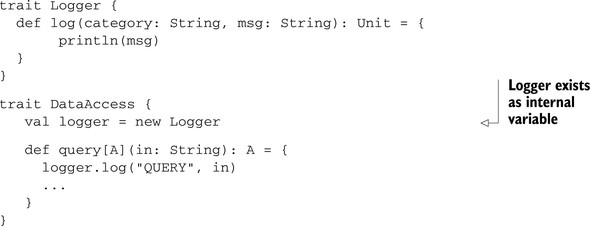</p>
      
      
      <p class="noind">Notice how the <kbd class="calibre18">DataAccess</kbd> class uses the <kbd class="calibre18">Logger</kbd> class. The current method of composition means that the <kbd class="calibre18">DataAccess</kbd> class must be able to instantiate the <kbd class="calibre18">Logger</kbd> class. An alternative would be to pass a logger into the constructor of the <kbd class="calibre18">DataAccess</kbd> class. In either case, the <kbd class="calibre18">DataAccess</kbd> trait contains all logging behavior. One point about the preceding implementation is that the logging behavior is nested
         in your <kbd class="calibre18">DataAccess</kbd> class. If we instead wanted to also have the ability to use <kbd class="calibre18">DataAccess</kbd> with <i class="calibre9">no</i> <kbd class="calibre18">Logger</kbd>, then we need to create a third entity that composes behavior from the first two. It would look something like this:
      </p>
      
      
      
      <h5 class="notetitle" id="ch04list8">Listing 4.8. <a id="ch04list8__title" class="calibre25"></a>Composition of <kbd class="calibre18">Logger</kbd> and <kbd class="calibre18">DataAccess</kbd> into third class
      </h5>
      <pre id="PLd0e7819" class="calibre8">trait Logger {
  def log(category: String, msg: String) : Unit = {
       println(msg)
  }
}

trait DataAccess {
  def query[A](in: String) : A = {
     ...
  }
}

trait LoggedDataAccess {
  val logger = new Logger
  val dao = new DataAccess

  def query[A](in: String) : A = {
     logger.log("QUERY", in)

     dao.query(in)
  }
}</pre>
      
      <p class="noind"><a id="iddle1211" class="calibre25"></a><a id="iddle1635" class="calibre25"></a><a id="iddle1653" class="calibre25"></a>Now we have standalone classes <kbd class="calibre18">Logger</kbd> and <kbd class="calibre18">DataAccess</kbd> that are minimal in implementation. We’ve composed their behavior into the third <kbd class="calibre18">LoggedDataAccess</kbd> class. This implementation has all the benefits of <kbd class="calibre18">DataAccess</kbd> and <kbd class="calibre18">Logger</kbd> being encapsulated and doing only one thing. The <kbd class="calibre18">LoggedDataAccess</kbd> class aggregates the two, providing mixed behavior. The issue here is that <kbd class="calibre18">LoggedDataAccess</kbd> doesn’t implement the <kbd class="calibre18">DataAccess</kbd> interface. These two types can’t be used interchangeably in client code via polymorphism. Let’s see what this would look
         like with pure inheritance:
      </p>
      
      
      
      <h5 class="notetitle" id="ch04list9">Listing 4.9. <a id="ch04list9__title" class="calibre25"></a>Inheritance-based composition of <kbd class="calibre18">Logger</kbd> and <kbd class="calibre18">DataAccess</kbd></h5>
      <pre id="PLd0e7879" class="calibre8">trait Logger {
  def log(category: String, msg: String) : Unit = {
       println(msg)
  }
}

trait DataAccess {
   def query[A](in: String): A = {
     ...
   }
}

trait LoggedDataAccess extends DataAccess with Logger {
   def query[A](in: String): A = {
      log("QUERY", in)
      super.query(in)
   }
}</pre>
      
      <p class="noind">Notice how the <kbd class="calibre18">LoggedDataAccess</kbd> class is now polymorphic on <kbd class="calibre18">DataAccess</kbd> <i class="calibre9">and</i> <kbd class="calibre18">Logger</kbd>. This means you could use the new class where you would expect to find a <kbd class="calibre18">DataAccess</kbd> or <kbd class="calibre18">Logger</kbd> class, so this class is better for later composition. Something is still strange here: <kbd class="calibre18">LoggedDataAccess</kbd> is also a <kbd class="calibre18">Logger</kbd>. This seems an odd dichotomy to have for a <kbd class="calibre18">DataAccess</kbd> class. In this simple example, it seems <kbd class="calibre18">Logger</kbd> would be an ideal candidate for member-composition into the <kbd class="calibre18">LoggedDataAccess</kbd> class.
      </p>
      
      
      <h4 id="ch04lev2sec3" class="calibre28">4.3.1. <a id="ch04lev2sec3__title" class="calibre25"></a>Member composition by inheritance
      </h4>
      
      <p class="noind">Another way to design these two classes (outlined in “Scalable Component Abstractions” by Oderksy and colleagues) involves
         inheritance-composition and member-composition. To start, let’s create a <kbd class="calibre18">Logger</kbd> trait hierarchy. The hierarchy will have three logger types, one for local logging, one for remote logging, and one that
         performs no logging.
      </p>
      
      
      <p class="noind"></p>
      
      
      <h5 class="notetitle" id="ch04list10">Listing 4.10. <a id="ch04list10__title" class="calibre25"></a><kbd class="calibre18">Logger</kbd> hierarchy
      </h5>
      <pre id="PLd0e7939" class="calibre8">trait Logger {
  def log(category: String, msg: String): Unit = {
       println(msg)
  }
}

trait RemoteLogger extends Logger {
  val socket = ...
  def log(category: String, msg: String): Unit = {
    //Send over socket
  }
}

trait NullLogger extends Logger {
   def log(category: String, msg: String): Unit = {}
}</pre>
      
      <p class="noind"><a id="iddle1440" class="calibre25"></a>The next thing we do is create what I’ll call an abstract member-composition class. This abstract class defines an overridable
         member. We can then create subclasses matching all the existing <kbd class="calibre18">Logger</kbd> subclasses.
      </p>
      
      
      
      <h5 class="notetitle" id="ch04list11">Listing 4.11. <a id="ch04list11__title" class="calibre25"></a>Abstract member-composition trait <kbd class="calibre18">HasLogger</kbd></h5>
      <pre id="PLd0e7961" class="calibre8">trait HasLogger {
  val logger: Logger = new Logger
}

trait HasRemoteLogger extends HasLogger {
  override val logger: Logger = new RemoteLogger {}
}

trait HasNullLogger extends HasLogger {
  override val logger: Logger = new NullLogger {}
}</pre>
      
      <p class="noind">The <kbd class="calibre18">HasLogger</kbd> trait does one thing: contains a logger member. This class can be subclassed by other classes who want to use a <kbd class="calibre18">Logger</kbd>. It gives a real “is-a” relationship to make inheritance worthwhile to <kbd class="calibre18">Logger</kbd> users. “Why the indirection?” you may be asking yourself. The answer comes with the ability to override members as you would
         methods in Scala. This allows you to create classes that extend <kbd class="calibre18">HasLogger</kbd> and then mixin the other <kbd class="calibre18">HasLogger</kbd> traits later for different behavior. In the following listing, let’s look at using the <kbd class="calibre18">HasLogger</kbd> trait to implement our <kbd class="calibre18">DataAccess</kbd> class.
      </p>
      
      
      
      <h5 class="notetitle" id="ch04list12">Listing 4.12. <a id="ch04list12__title" class="calibre25"></a><kbd class="calibre18">DataAccess</kbd> class with <kbd class="calibre18">HasLogger</kbd> trait
      </h5>
      <pre id="PLd0e7999" class="calibre8">trait DataAccess extends HasLogger {

   def query[A](in: String) : A = {
     logger.log("QUERY", in)
     ...
   }
}</pre>
      
      <p class="noind"><a id="iddle1212" class="calibre25"></a><a id="iddle1228" class="calibre25"></a><a id="iddle1654" class="calibre25"></a>Now for the real fun. Let’s write a unit test for the <kbd class="calibre18">DataAccess</kbd> class. In the unit test, we don’t want to be logging output; we want to test the behavior of the function. To do so, we want
         to use the <kbd class="calibre18">NullLogger</kbd> implementation. Let’s look at a specification test for <kbd class="calibre18">DataAccess</kbd>:
      </p>
      
      
      
      <h5 class="notetitle" id="ch04list13">Listing 4.13. <a id="ch04list13__title" class="calibre25"></a>Specification test for <kbd class="calibre18">DataAccess</kbd></h5>
      
      <p class="center1"></p>
      
      
      <p class="noind">We now have the ability to change the composition of the <kbd class="calibre18">DataAccess</kbd> class when we instantiate it. As you can see, we gain the benefits of member-composition and inheritance composition at the
         cost of more legwork. Let’s see if Scala has something that could reduce this legwork.
      </p>
      <p class="calibre2"> </p><table cellspacing="5" width="100%" border="1" class="calibre10"><colgroup class="calibre19"><col width="550" class="calibre12"/></colgroup><tbody class="calibre13"><tr class="calibre14"><td class="calibre20"/>
            </tr></tbody></table><h5 class="notetitle" id="ch04note01">Note</h5>
      
      
      <p class="noindclose">A trait containing multiple abstract members is sometimes called an <i class="calibre9">environment</i>. This is because the trait contains the environment needed for another class to function.
      </p>
      
      <table cellspacing="5" width="100%" border="1" class="calibre10"><colgroup class="calibre19"><col width="550" class="calibre12"/></colgroup><tbody class="calibre13"><tr class="calibre14"><td class="calibre20"/>
            </tr></tbody></table><p class="calibre2"> </p><h4 id="ch04lev2sec4" class="calibre28">4.3.2. <a id="ch04lev2sec4__title" class="calibre25"></a>Classic constructors with a twist
      </h4>
      
      <p class="noind">In the case of classic Java-like inheritance, we can try to compose using constructor arguments. This reduces the number of
         parent classes to one, as only abstract/concrete classes can have arguments, and they can only be singly inherited. But Scala
         has two features that will help you out:
      </p>
      
      <p class="calibre22"></p>
      <ul class="calibre23"><li class="calibre24">Named and default parameters</li>
         
         <li class="calibre24">Promote constructor arguments to members</li>
         
      </ul><p class="noind">In the following listing, let’s recreate the <kbd class="calibre18">DataAccess</kbd> class, but this time as a full up class where the logger is a constructor argument. Let’s also define a default argument
         for logger. We’ll promote this argument to be an immutable member on the <kbd class="calibre18">Data-Access</kbd> class.
      </p>
      
      
      
      <h5 class="notetitle" id="ch04list14">Listing 4.14. <a id="ch04list14__title" class="calibre25"></a><kbd class="calibre18">DataAccess</kbd> as a class with default arguments
      </h5>
      <pre id="PLd0e8100" class="calibre8">class DataAccess(val logger: Logger = new Logger {}) {

   def query[A](in: String) : A = {
     logger.log("QUERY", in)
     ...
   }
}</pre>
      
      <p class="noind">This class is simple. It defaults to a particular logger at instantiation time and lets you supply your own (via constructor)
         if desired. The real fun comes when we want to extend this class, provide users with a mechanism to supply a logger to the
         subclass and use the same default as the <kbd class="calibre18">DataAccess</kbd> class. To do so, we’ll have to understand how the compiler collects default arguments.
      </p>
      
      <p class="noind">When a method has default arguments, the compiler generates a static method for obtaining the default. Then when user code
         calls a method, if it doesn’t supply an argument, the compiler calls the static method for the default and supplies the argument.
         In the case of a constructor, these arguments get placed on the companion object for the class. If there’s no companion object,
         one will be generated. The companion object will have methods for generating each argument. These argument-generating methods
         use a form of name mangling so the compiler can deterministically call the correct one. The mangling format is method name
         followed by argument number, all separated with $. Let’s look at what a subclass of <kbd class="calibre18">DataAccess</kbd> would have to look like for our requirements:
      </p>
      
      
      
      <h5 class="notetitle" id="ch04list15">Listing 4.15. <a id="ch04list15__title" class="calibre25"></a>Inheritance with default arguments
      </h5>
      <pre id="PLd0e8123" class="calibre8">class DoubleDataAccess(
    logger: Logger = DataAccess.`init$default$1`
  ) extends DataAccess(logger) {
  ...
}</pre>
      
      <p class="noind">You’ll notice two things in this code. First, the constructor is pickled with a method name of <kbd class="calibre18">init</kbd>. This is because in the JVM bytecode, constructors are called <kbd class="calibre18">&lt;init&gt;</kbd>. The second is the use of the backtick (`) operator. In Scala, this method is used to denote “I’m going to use an identifier
         here with potentially nonstandard characters that could cause parsing issues.” This is handy when calling methods defined
         in other languages that have different reserved words and identifiers.
      </p>
      
      <p class="noind">We’ve finally created a method of simplifying composition using constructor arguments. The method certainly suffers from ugliness
         when trying to also include inheritance in your classes. Let’s look at the pros and cons of each compositional method in the
         following table:
      </p>
      
      <h5 class="notetitle" id="ch04table02">Table 4.2. <a id="ch04table02__title" class="calibre25"></a>Pros/Cons of compositional methods
      </h5>
      <table cellspacing="5" frame="hsides" rules="cols" cellpadding="8" width="100%" class="calibre26"><colgroup span="3" class="calibre11"><col width="200" class="calibre12"/><col width="200" class="calibre12"/><col width="150" class="calibre12"/></colgroup><thead class="calibre27"><tr class="calibre14"><th class="docTableCell1" scope="col" valign="top">
                  <p class="noind">Method</p>
               </th>
               <th class="docTableCell1" scope="col" valign="top">
                  <p class="noind">Pros</p>
               </th>
               <th class="docTableCell1" scope="col" valign="top">
                  <p class="noind">Cons</p>
               </th>
            </tr></thead><tbody class="calibre13"><tr class="calibre14"><td class="docTableCell" valign="top">Member composition</td>
               <td class="docTableCell" valign="top"><ul class="calibre23"><li class="calibre24">Standard Java practice</li>
                  </ul></td>
               <td class="docTableCell" valign="top"><ul class="calibre23"><li class="calibre24">No polymorphism</li>
                  </ul></td>
            </tr><tr class="calibre14"><td class="docTableCell" valign="top"> </td>
               <td class="docTableCell" valign="top"> </td>
               <td class="docTableCell" valign="top"><ul class="calibre23"><li class="calibre24">Inflexible</li>
                  </ul></td>
            </tr><tr class="calibre14"><td class="docTableCell" valign="top">Inheritance composition</td>
               <td class="docTableCell" valign="top"><ul class="calibre23"><li class="calibre24">Polymorphism</li>
                  </ul></td>
               <td class="docTableCell" valign="top"><ul class="calibre23"><li class="calibre24">Violation of encapsulation</li>
                  </ul></td>
            </tr><tr class="calibre14"><td class="docTableCell" valign="top">Abstract member composition</td>
               <td class="docTableCell" valign="top"><ul class="calibre23"><li class="calibre24">Most flexible</li>
                  </ul></td>
               <td class="docTableCell" valign="top"><ul class="calibre23"><li class="calibre24">Code bloat—especially setting up parallel class hierarchies</li>
                  </ul></td>
            </tr><tr class="calibre14"><td class="docTableCell" valign="top">Composition using constructor with default arguments</td>
               <td class="docTableCell" valign="top"><ul class="calibre23"><li class="calibre24">Reduction in code size</li>
                  </ul></td>
               <td class="docTableCell" valign="top"><ul class="calibre23"><li class="calibre24">Doesn’t work well with inheritance</li>
                  </ul></td>
            </tr></tbody></table><p class="noind"><a id="iddle1038" class="calibre25"></a><a id="iddle1524" class="calibre25"></a><a id="iddle1535" class="calibre25"></a><a id="iddle1596" class="calibre25"></a>Many “new” methods of doing object composition are possible within Scala. I recommend picking something you’re comfortable
         with. When it comes to inheritance, I prefer “is-a” or “acts-as-a” relationships for parents. If there’s no “is-a” or “acts-as-a”
         relationship and you still need to use inheritance-composition, use the abstract member composition pattern. If you have single-class
         hierarchies and no “is-a” relationships, your best option is composition using constructors with default arguments. Scala
         provides the tools you need to solve the problem you have at hand. Make sure you understand it fully before deciding on an
         object-composition strategy.
      </p>
      
      <p class="noind">In <a href="kindle_split_019.html#ch11lev2sec3" class="calibre7">section 11.3.2</a>, we show an alternative means of composing objects using a functional approach. Although the concepts behind this approach
         are advanced, the approach offers a good middle ground between using constructors with default arguments and abstract member
         composition.
      </p>
      
      
      
      
      <h3 id="ch04lev1sec4" class="calibre17"><a id="ch04lev1sec4__title" class="calibre6"></a>4.4. Promote abstract interface into its own trait
      </h3>
      <p class="calibre2"> </p><table cellspacing="5" width="100%" border="1" class="calibre10"><colgroup class="calibre19"><col width="550" class="calibre12"/></colgroup><tbody class="calibre13"><tr class="calibre14"><td class="calibre20"/>
            </tr></tbody></table><div class="calibre4">
         
         <b id="ch04sb05" class="calibre21">Rule 11: Put the abstract interface into its own trait</b>
         
         <p class="noind">It’s possible to mix implementation and interface with traits, but it is still a good idea to provide a pure abstract interface.
            This can be used by either Scala or Java libraries. It can then be extended by a trait which fills in the implementation details.
         </p>
         
      </div>
      <table cellspacing="5" width="100%" border="1" class="calibre10"><colgroup class="calibre19"><col width="550" class="calibre12"/></colgroup><tbody class="calibre13"><tr class="calibre14"><td class="calibre20"/>
            </tr></tbody></table><p class="calibre2"> </p><p class="noind">Modern object-oriented design promotes the use of abstract types to declare interfaces. In Java, these use the interface keywords
         and can’t include implementation. In C++ the same could be accomplished by using all pure virtual functions. A common pitfall
         among new Scala developers was also an issue with C++: With the new power of traits, it can be tempting to put method implementations
         into traits. Be careful when doing so! Scala’s traits do the most to impact binary compatibility of libraries. In the following
         listing, let’s look at a simple Scala trait and a class that uses this trait to see how it compiles:
      </p>
      
      
      
      <h5 class="notetitle" id="ch04list16">Listing 4.16. <a id="ch04list16__title" class="calibre25"></a>Simple Scala trait and implementation class
      </h5>
      <pre id="PLd0e8328" class="calibre8">trait Foo {
  def someMethod(): Int = 5
}
class Main() extends Foo{
}</pre>
      
      <p class="noind">The following listing shows the <kbd class="calibre18">javap</kbd> output for the <kbd class="calibre18">Main</kbd> class:
      </p>
      
      <h5 class="notetitle" id="ch04list17">Listing 4.17. <a id="ch04list17__title" class="calibre25"></a><kbd class="calibre18">javap</kbd> disassembly of <kbd class="calibre18">Main</kbd> class
      </h5>
      <p class="center1">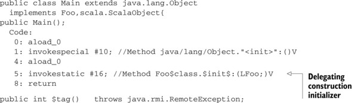</p>
      <p class="center1">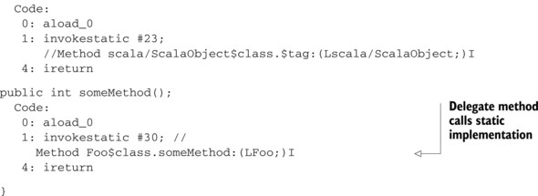</p>
      
      <p class="noind"><a id="iddle1118" class="calibre25"></a><a id="iddle1691" class="calibre25"></a>As you can see, with some adjustment to reading JVM bytecode, the <kbd class="calibre18">Main</kbd> class is given a delegate class from the compiler. One obvious issue with binary compatibility is that if the <kbd class="calibre18">Foo</kbd> trait is given another method, the <kbd class="calibre18">Main</kbd> class won’t be given a delegate method without recompiling it. The JVM does something funny, though. It will allow you to
         link (think binary compatibility) even if a class doesn’t fully implement an interface. It errors out only when someone tries
         to use a method on the interface that’s unimplemented. Let’s take it for a test toast in the following listing. We’ll change
         the <kbd class="calibre18">Foo</kbd> trait without modifying the <kbd class="calibre18">Main</kbd> class.
      </p>
      
      
      
      <h5 class="notetitle" id="ch04list18">Listing 4.18. <a id="ch04list18__title" class="calibre25"></a>Modified <kbd class="calibre18">Foo</kbd> trait
      </h5>
      <pre id="PLd0e8395" class="calibre8">trait Foo {
  def someMethod(): Int = 5
  def newMethod() = "HAI"
}</pre>
      
      <p class="noind">As you can see, we’ve added the <kbd class="calibre18">newMethod</kbd> method. We should still be able to use the compiled <kbd class="calibre18">Main</kbd> to instantiate a <kbd class="calibre18">Foo</kbd> at runtime. Here’s what it looks like:
      </p>
      
      
      
      <h5 class="notetitle" id="ch04list19">Listing 4.19. <a id="ch04list19__title" class="calibre25"></a><kbd class="calibre18">ScalaMain</kbd> testing class
      </h5>
      <pre id="PLd0e8418" class="calibre8">object ScalaMain {
   def main(args : Array[String]) {
      val foo: Foo = new Main();
      println(foo.someMethod());
      println(foo.newMethod());
   }
}</pre>
      
      <p class="noind">You’ll notice we’re making a new <kbd class="calibre18">Main</kbd> object and coercing its type to be a <kbd class="calibre18">Foo</kbd>. The most interesting piece of this class is that it compiles and runs. Let’s look at its output.
      </p>
      
      <pre id="PLd0e8433" class="calibre8">java -cp /usr/share/java/scala-library.jar:. ScalaMain
5
Exception in thread "main" java.lang.AbstractMethodError:
Main.newMethod()Ljava/lang/String;
at ScalaMain$.main(ScalaMain.scala:7)
at ScalaMain.main(ScalaMain.scala)</pre>
      
      <p class="noind"><a id="iddle1039" class="calibre25"></a><a id="iddle1042" class="calibre25"></a><a id="iddle1536" class="calibre25"></a><a id="iddle1884" class="calibre25"></a><a id="iddle1885" class="calibre25"></a>Notice that the classes link fine; it even runs the first method call! The issue comes when calling the new method from the
         <kbd class="calibre18">Foo</kbd> trait. This finally causes an <kbd class="calibre18">Abstract-MethodError</kbd> to be thrown, the closest we get to a linking error. The confusing part to a Scala newcomer is that the trait provides a
         default implementation! Well, if we want to call the default implementation, we can do so at runtime. Let’s look at the modified
         <kbd class="calibre18">ScalaMain</kbd> in the following listing:
      </p>
      
      
      
      <h5 class="notetitle" id="ch04list20">Listing 4.20. <a id="ch04list20__title" class="calibre25"></a>Modified <kbd class="calibre18">ScalaMain</kbd> testing class
      </h5>
      <pre id="PLd0e8490" class="calibre8">object ScalaMain {
   def main(args: Array[String]) {
      val foo: Foo = new Main()
      println(foo.someMethod())

      val clazz = java.lang.Class.forName("Foo$class")
      val method = clazz.getMethod("newMethod", Array(classOf[Foo]): _*)
      println(method.invoke(null, foo));
   }
}</pre>
      
      <p class="noind">You’ll see we’re looking up and using the new method via reflection. Here’s the runtime output:</p>
      
      <pre id="PLd0e8499" class="calibre8">java -cp /usr/share/java/scala-library.jar:. ScalaMain
5
HAI</pre>
      
      <p class="noind">This points out an interesting side of the JVM/Scala’s design; methods added to traits can cause unexpected runtime behavior.
         Therefore it’s usually safe to recompile all downstream users, to be on the safe side. The implementation details of traits
         can throw off new users, who expect new methods with implementations to automatically link with precompiled classes. Not only
         that, but adding new methods to traits will also not break binary compatibility unless someone calls the new method!
      </p>
      
      
      <h4 id="ch04lev2sec5" class="calibre28">4.4.1. <a id="ch04lev2sec5__title" class="calibre25"></a>Interfaces you can talk to
      </h4>
      
      <p class="noind">When creating two different “parts” of a software program, it’s helpful to create a completely abstract interface between
         them that they can use to talk to each other. See <a href="#ch04fig03" class="calibre7">figure 4.3</a>. This middle piece should be relatively stable, compared to the others, and have as few dependencies as possible. One thing
         you may have noticed from earlier is that Scala’s traits compile with a dependency on the <kbd class="calibre18">ScalaObject</kbd> trait. It’s possible to remove this dependency, something that’s handy if the two pieces of your software wanted to use differing
         Scala-library versions.
      </p>
      
      
      
      <h5 class="notetitle" id="ch04fig03">Figure 4.3. <a id="ch04fig03__title" class="calibre25"></a>Abstract interface between software modules.
      </h5>
      
      
      
      <p class="center1">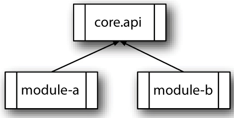</p>
      
      
      
      <p class="noind"><a id="iddle1040" class="calibre25"></a><a id="iddle1537" class="calibre25"></a><a id="iddle1797" class="calibre25"></a>The key to this interaction is that each module depends on the common interface code and no artifacts from each other. This
         strategy is most effective when there are different developers on module A and module B, such that they evolve at different
         rates. Preventing any kind of dependencies between the modules allows the new module systems, such as OSGi, to dynamically
         reload module B without reloading module A so long as the appropriate framework hooks are in place and all communications
         between the modules A and B happen via the core-api module.
      </p>
      
      <p class="noind">To create a trait that compiles to a pure abstract interface, similar to a Java interface don’t define any methods. Look at
         the <kbd class="calibre18">PureAbstract</kbd> trait in the following listing:
      </p>
      
      
      
      <h5 class="notetitle" id="ch04list21">Listing 4.21. <a id="ch04list21__title" class="calibre25"></a><kbd class="calibre18">PureAbstract</kbd> trait
      </h5>
      <pre id="PLd0e8571" class="calibre8">trait PureAbstract {
   def myAbstractMethod(): Unit
}</pre>
      
      <p class="noind">Now let’s look at the <kbd class="calibre18">javap</kbd> disassembled code:
      </p>
      
      <pre id="PLd0e8583" class="calibre8">javap -c PureAbstract
Compiled from "PureAbstract.scala"
public interface PureAbstract{
  public abstract void myAbstractMethod();
}</pre>
      
      <p class="noind">You’ll notice the <kbd class="calibre18">PureAbstract</kbd> trait doesn’t have a dependency on <kbd class="calibre18">ScalaObject</kbd>. This is a handy method of creating abstract interfaces when needed; it becomes important when used with module systems like
         OSGi. In fact, this situation is similar to the one faced when interfacing two C++ libraries using C interfaces.
      </p>
      
      
      
      <h4 id="ch04lev2sec6" class="calibre28">4.4.2. <a id="ch04lev2sec6__title" class="calibre25"></a>Learning from the past
      </h4>
      
      <p class="noind">Although this rule may seem contradictory to the “Provide empty implementations for abstract methods,” the two are used to
         solve differing problems. Use this rule when trying to create separation between modules, and provide implementations for
         abstract methods when creating a library of traits you intend users to extend via mixins. Pure abstract traits also help explicitly
         identify a minimum interface. A dichotomy of thought exists here. Some designers prefer “rich” APIs, and others prefer “thin,”
         where a thin API would be the minimum necessary to implement a piece of functionality, and a rich API would contain a lot
         of extra helper methods to ease usage.
      </p>
      
      <p class="noind">Scala traits bring the power to add lots of helper methods, something lacking in Java’s interfaces. This kind of power was
         common in C++, which also suffered many more issues with binary compatibility. In C++, binary compatibility issues forced
         the creation of a pure “C” integration layer for libraries. This layer wrapped a rich C++ hierarchy inside the library. Clients
         of the library would then implement wrappers around the C layer, converting back from classless world to OO and providing
         the “rich” API. In my experience, these classes usually were thin wrappers around the C layer and mostly lived in header files,
         such that users of the library could gain binary compatibility without having to write their own wrapper.
      </p>
      
      <p class="noind"><a id="iddle1304" class="calibre25"></a><a id="iddle1317" class="calibre25"></a><a id="iddle1656" class="calibre25"></a><a id="iddle1838" class="calibre25"></a>In Scala, we can provide our rich interface via a simple delegate trait and some mixins. The “thin” interface should be something
         that we can reasonably expect someone to implement completely. This way the users of the “abstract interface” can grow their
         rich interface as needed for their project, assuming the “thin” interface is complete.
      </p>
      
      <p class="noind">When you have two pieces of software that will be interacting but were developed by diverse or disparate teams, you should
         promote abstract interfaces into their own traits and lock those traits down as best as possible for the life of that project.
         When the abstract interface needs to be modified, all dependent modules should be upgraded against the changed traits to ensure
         proper runtime linkage.
      </p>
      
      
      
      
      <h3 id="ch04lev1sec5" class="calibre17"><a id="ch04lev1sec5__title" class="calibre6"></a>4.5. Provide return types in your public APIs
      </h3>
      <p class="calibre2"> </p><table cellspacing="5" width="100%" border="1" class="calibre10"><colgroup class="calibre19"><col width="550" class="calibre12"/></colgroup><tbody class="calibre13"><tr class="calibre14"><td class="calibre20"/>
            </tr></tbody></table><div class="calibre4">
         
         <b id="ch04sb06" class="calibre21">Rule 12: Provide return types for public APIs</b>
         
         <p class="noind">Scala can infer return types to methods. However, for a human reading a nontrivial method implementation, infering the return
            type can be troubling. In addition, letting Scala infer the return type can allow implementation details to slip past an interface.
            It’s best to explicitly document and enforce return types in public APIs.
         </p>
         
      </div>
      <table cellspacing="5" width="100%" border="1" class="calibre10"><colgroup class="calibre19"><col width="550" class="calibre12"/></colgroup><tbody class="calibre13"><tr class="calibre14"><td class="calibre20"/>
            </tr></tbody></table><p class="calibre2"> </p><p class="noind">Imagine you’re developing a messaging library. This library contains a <kbd class="calibre18">Message-Dispatcher</kbd> interface that users of your library can use to send messages. A <kbd class="calibre18">Factory</kbd> method also takes various configuration parameters and returns a <kbd class="calibre18">MessageDispatcher</kbd>. As a library designer, we decide that we want to rework existing implementation to create different <kbd class="calibre18">MessageDispatcher</kbd> implementations based on the parameters to the <kbd class="calibre18">Factory</kbd> method. Let’s start with a <kbd class="calibre18">MessageDispatcher</kbd> trait in the following listing:
      </p>
      
      
      
      <h5 class="notetitle" id="ch04list22">Listing 4.22. <a id="ch04list22__title" class="calibre25"></a><kbd class="calibre18">MessageDispatcher</kbd> trait
      </h5>
      <pre id="PLd0e8680" class="calibre8">trait MessageDispatcher[-T] {
  def sendMessage(msg: T) : Unit
}</pre>
      
      <p class="noind">The trait is rather simple; it provides a mechanism to send messages. Now let’s create the factory and an implementation class:</p>
      
      
      
      <h5 class="notetitle" id="ch04list23">Listing 4.23. <a id="ch04list23__title" class="calibre25"></a><kbd class="calibre18">MessageDispatcher</kbd> factory and implementation class
      </h5>
      <pre id="PLd0e8694" class="calibre8">class ActorDispatcher[-T, U &lt;: OutputChannel[T]](receiver: U)
 extends MessageDispatcher[T] {
  override def sendMessage(msg: T) {
     receiver ! msg
  }
}

object MyFactory {
  def createDispatcher(a: OutputChannel[Any]) =
    new ActorDispatcher(actor)
}</pre>
      
      <p class="noind"><a id="iddle1054" class="calibre25"></a><a id="iddle1237" class="calibre25"></a><a id="iddle1597" class="calibre25"></a><a id="iddle1706" class="calibre25"></a>The code is pretty standard. The actor dispatcher will transmit messages to an actor in the Scala actors library. We’ll discuss
         that library in depth later. For now, we’ll focus on the <kbd class="calibre18">createDispatcher</kbd> factory method. This method looks standard but has one issue: The return type isn’t a <kbd class="calibre18">MessageDispatcher</kbd> but an <kbd class="calibre18">ActorDispatcher</kbd>. This means we’ve leaked our abstraction. See the <kbd class="calibre18">javap</kbd> output for proof:
      </p>
      
      <pre id="PLd0e8736" class="calibre8">public final class MyFactory$ extends java.lang.Object
  implements scala.ScalaObject{
    public static final MyFactory$ MODULE$;
    public static {};
    public ActorDispatcher createDispatcher(java.lang.Object);
}</pre>
      
      <p class="noind">We’ve leaked the <kbd class="calibre18">ActorDispatcher</kbd> class in the public API. This may be okay in a small project, but it lends itself to issues if others rely on receiving <kbd class="calibre18">ActorDispatcher</kbd> instances from this method instead of a <kbd class="calibre18">MessageDispatcher</kbd>. We can easily change this by refactoring your API slightly to return more than one type. Let’s create a <kbd class="calibre18">Null-Dispatcher</kbd> that doesn’t send messages. We also change the <kbd class="calibre18">createDispatcher</kbd> method to take in any type of object and return appropriate dispatchers for each. If we don’t have a useful dispatcher, we’ll
         use the <kbd class="calibre18">NullDispatcher</kbd>.
      </p>
      
      
      
      <h5 class="notetitle" id="ch04list24">Listing 4.24. <a id="ch04list24__title" class="calibre25"></a><kbd class="calibre18">MessageDispatcher</kbd> factory with two implementation classes
      </h5>
      <pre id="PLd0e8768" class="calibre8">object NullDispatcher
    extends MessageDispatcher[Any] {
  override def sendMessage(msg: Any) : Unit = {}
}

object MyFactory {
      def createDispatcher(a: Any) = {
        a match {
          case actor: OutputChannel[Any] =&gt; new ActorDispatcher(actor)
          case _ =&gt; NullDispatcher
        }
      }
}</pre>
      
      <p class="noind">This slight change has made the compiler reinfer a different return type. We can see proof of this in the new <kbd class="calibre18">javap</kbd> output:
      </p>
      
      <pre id="PLd0e8780" class="calibre8">public final class MyFactory$ extends java.lang.Object
      implements scala.ScalaObject{
    public static final MyFactory$ MODULE$;
    public static {};
    public MessageDispatcher createDispatcher(java.lang.Object);
}</pre>
      
      <p class="noind">The resulting API has inferred <kbd class="calibre18">MessageDispatcher</kbd> as the return type. This could silently break code that was relying on receiving an <kbd class="calibre18">ActorDispatcher</kbd>. It’s easy enough to annotate the return type for a public API. Modify the <kbd class="calibre18">createDispatcher</kbd> method as follows:
      </p>
      
      
      <pre id="PLd0e8800" class="calibre8">object MyFactory {
      def createDispatcher(a: Any): MessageDispatcher[Any] = {
        a match {
          case actor: OutputChannel[Any] =&gt; new ActorDispatcher(actor)
          case _ =&gt; NullDispatcher
        }
      }
}</pre>
      
      <p class="noind"><a id="iddle1305" class="calibre25"></a>Now the return type is locked to <kbd class="calibre18">MessageDispatcher[Any]</kbd> and anything that violates this will cause a compiler warning, rather than breaking client code.
      </p>
      
      <p class="noind">To help avoid confusion or leaking implementation details, it’s best to provide explicit return types on public methods in
         your API. This can also help speed compilation slightly, as the type inferences don’t need to figure out a return type, and
         it gives a chance for your implicit conversions to kick in, coercing things to the desired type. The only time it would be
         okay to not specify return types is in the case of sealed single-class hierarchy, a private method, or when overriding a method
         in a parent that explicitly declares a return type. Ironically, when coding in a functional style, you find that you tend
         not to use inheritance as much as you would think. I find this rule generally applies to my domain model and perhaps my UI
         library, but not the more functional aspects of my code.
      </p>
      
      
      
      <h3 id="ch04lev1sec6" class="calibre17"><a id="ch04lev1sec6__title" class="calibre6"></a>4.6. Summary
      </h3>
      
      <p class="noind">Scala’s object system is powerful and elegant. The body of code in a class definition defines the constructor of a class.
         For top-level objects, this means that code in the body should avoid expensive operations and other non-construction behavior.
         Scala also allows mixin inheritance. But when defining methods, only methods marked with <kbd class="calibre18">override</kbd> can override an existing implementation in the hierarchy. Adding <kbd class="calibre18">override</kbd> can help ease mixin inheritance and avoid method typos. Mixin inheritance also provides a new way to compose software. Mixins
         can mark objects as <i class="calibre9">having</i> a value and allow new values to be mixed in via inheritance. This technique provides the most flexibility when <i class="calibre9">pure abstract interfaces</i> are used for the API systems. Finally, type inference can change an API as the object model expands. For public methods,
         it’s best to explicitly annotate return types on critical interfaces. This leads to the best use of objects in Scala.
      </p>
      
      
      
      
      <div class="calibre4" id="calibre_pb_12"></div></div>

{% endraw %}

